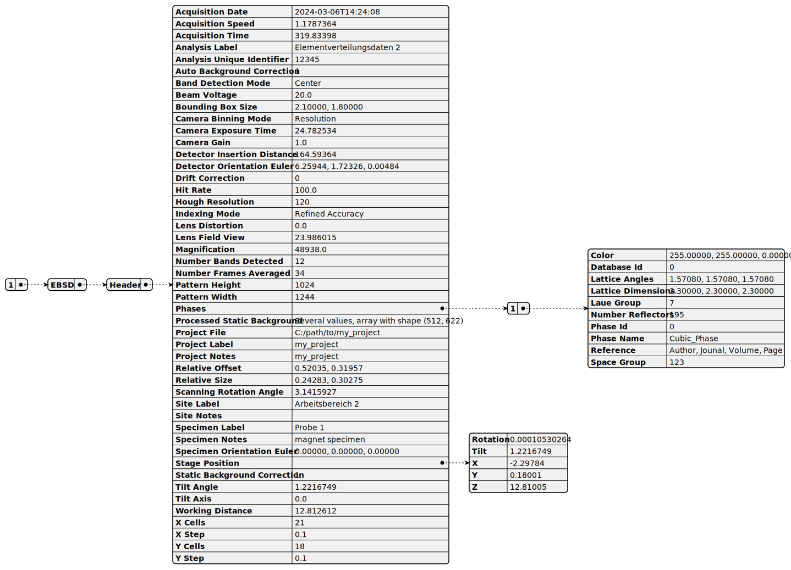
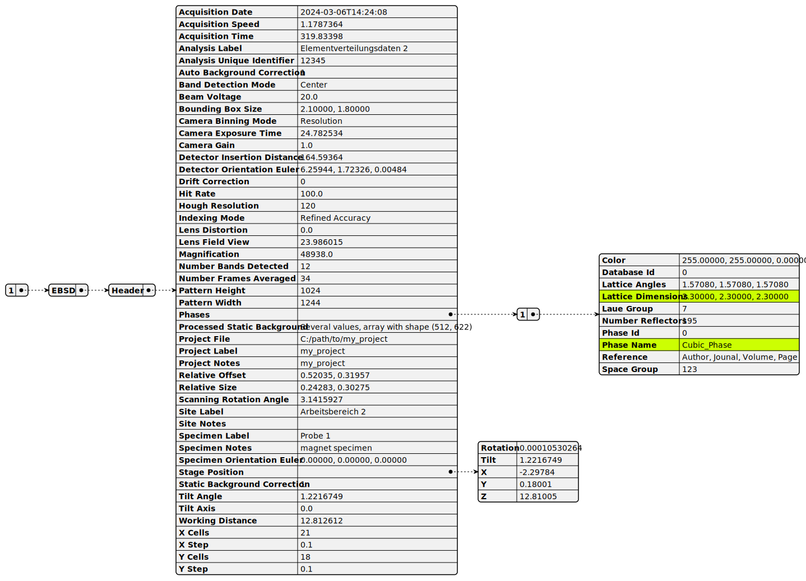
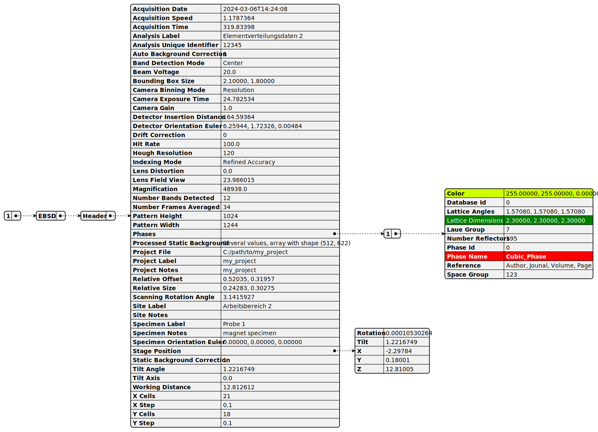

Generating a plantuml json diagram using metadata extracted from an hdf5 file#
metadata are commonly found in groups within hdf5 files
typically we have name/value pairs of metadata, which is very similar to the json (javascript object notation) format
plantuml has a great option to plot json data in an attractive, easy to read way.
mochada_kit has convenience functions for extracting metadata from hdf5 files and plotting it as a json diagram with plantuml
Let’s import pathlib to help us with file paths in a platform independent way:
[1]:
import pathlib
Then, let’s import the module hdf5_metadata_tools from mochada_kit. This helps us to write the puml code for the diagrams. We import the module running, which we will use to run the puml code against plantuml.jar to generate the diagrams.
[2]:
import mochada_kit.hdf5_metadata_tools as hmt
import mochada_kit.running as mr
The
mochada_kit/datadirectory has example file which we can use:ebsd_header.h5oina. As the name suggests, this only contains the header from an EBSD data set, in order to keep the file size small. The h5oina data structure is used by Oxford Instruments and is an open format available on github.The functions in
mochada_kit.hdf5_metadata_toolswork with hdf5 files with any data structure.If you want to inspect the structure of your hdf5 file, you can use the lightweight, Python-based viewer: hdf5view.
In the following examples, we will extract and plot the metadata found in the group "1/EBSD/Header" in the file mochada_kit/data/ebsd_header.h5oina
1. Basic Example#
To extract the metadata at the group "1/EBSD/Header" and write it to puml code, we call the function write_puml_code_for_hdf5_metadata() with the following four arguments:
the path to the hdf5 file
the path within the hdf5 file pointing to the metadata i.e.
"1/EBSD/Header"the output path (without a file extension) where the resulting .puml file will be saved (we will save it in
mochada_kit/gallery/puml_code)the optional argument:
save_json_and_load=False. Specifying this means that the metadata from the hdf5 file will be written directly into the puml code. If we do not specify this, the metadata is saved to a json file and the puml code loads the metdata from json.
[3]:
hmt.write_puml_code_for_hdf5_metadata(
pathlib.Path(r"../../data/ebsd_header.h5oina"),
"1/EBSD/Header",
pathlib.Path(r"../../gallery/puml_code/hdf5_metadata_json_1_no_HL"),
save_json_and_load=False,
)
Having written the puml code, we can run it like this to generate the json diagram as an svg image, which will be stored in mochada_kit/gallery:
[4]:
mr.run_plantuml_code(
pathlib.Path(r"../../gallery/puml_code/hdf5_metadata_json_1_no_HL.puml"),
output_dir=pathlib.Path("../"),
)
This results in the following diagram:

2. Example with Default Highlights#
If we want to highlight one or more items in the diagram using the default highlight settings given in plantuml, we can define a list of paths within the hdf5 file to the desired items like this:
[5]:
highlights_default = [
"1/EBSD/Header/Phases/1/Lattice Dimensions",
"1/EBSD/Header/Phases/1/Phase Name",
]
Then we can additionally supply this argument to the function write_puml_code_for_hdf5_metadata() like this:
[6]:
hmt.write_puml_code_for_hdf5_metadata(
pathlib.Path(r"../../data/ebsd_header.h5oina"),
"1/EBSD/Header",
pathlib.Path(r"../../gallery/puml_code/hdf5_metadata_json_2_default_HL"),
save_json_and_load=False,
highlights=highlights_default,
)
And run the puml code:
[7]:
mr.run_plantuml_code(
pathlib.Path(r"../../gallery/puml_code/hdf5_metadata_json_2_default_HL.puml"),
output_dir=pathlib.Path("../"),
)
This results in the following diagram:

3. Example with Bespoke Highlights#
If we want to define our own highlight styles and apply them to particular elements, we need to define two things:
a css style block defining the styles we want to apply
a dict of highlights where the keys are the paths within the hdf5 file to the desired item, and the values are the names of the highlights we want to apply to that item
1. css style block
This is a multi-line string. “.h1” and “.h2” are the two different highlight styles we want to define. Then you can apply various parameters e.g. BackGroundColor, see here for further details of available parameters.
[8]:
my_highlight_style = """<style>
.h1 {
BackGroundColor green
FontColor white
FontStyle italic
}
.h2 {
BackGroundColor red
FontColor white
FontStyle bold
}
</style>"""
2. highlights dict
Now we define a dict where the keys are the paths within the hdf5 file to the desired item, and the values are the names of the highlights we want to apply to that item e.g. <<h1>> to apply the first highlight style defined above (.h1). Entering an empty string as a value will result in the default highlight style being applied to that element.
[9]:
highlights_bespoke = {
"1/EBSD/Header/Phases/1/Lattice Dimensions": "<<h1>>",
"1/EBSD/Header/Phases/1/Phase Name": "<<h2>>",
"1/EBSD/Header/Phases/1/Color": "",
}
Then we can supply these two arguments to the function write_puml_code_for_hdf5_metadata()
[10]:
hmt.write_puml_code_for_hdf5_metadata(
pathlib.Path(r"../../data/ebsd_header.h5oina"),
"1/EBSD/Header",
pathlib.Path(r"../../gallery/puml_code/hdf5_metadata_json_3_bespoke_HL"),
save_json_and_load=False,
highlights=highlights_bespoke,
highlight_style=my_highlight_style,
)
And run the puml code:
[11]:
mr.run_plantuml_code(
pathlib.Path(r"../../gallery/puml_code/hdf5_metadata_json_3_bespoke_HL.puml"),
output_dir=pathlib.Path("../"),
)
This results in the following diagram:

[ ]: